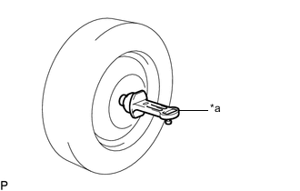
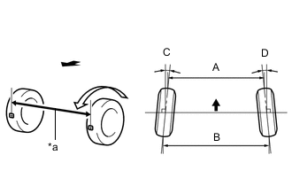
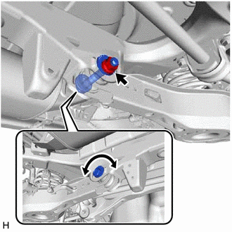

REAR WHEEL ALIGNMENT ADJUSTMENT
CAUTION / NOTICE / HINT
The necessary procedures (adjustment, calibration, initialization, or registration) that must be performed after completing the rear wheel alignment procedure are shown below.
| Replaced Part or Performed Procedure | Necessary Procedure | Effect/Inoperative Function when Necessary Procedure not Performed | Link |
|---|---|---|---|
| Rear wheel alignment adjustment |
|
|
PROCEDURE
-
INSPECT TIRES
-
MEASURE VEHICLE HEIGHT
-
INSPECT CAMBER
Note
Inspect while the vehicle is unloaded.
-

*a Camber-caster-kingpin Gauge Install a camber-caster-kingpin gauge.
-
Inspect the camber.
Camber (Unloaded Vehicle) *A: for Rough Road Area Specification VehiclesCamber Inclination Right-left Difference -1°07' +/- 0°45' (-1.12° +/- 0.75°)
-0°48' +/- 0°45' (-0.80° +/- 0.75°)*A
0°45' (0.75°) or less
Tech Tips
Camber is not adjustable. If the measurement is not within the specified range, inspect the suspension parts for damage and/or wear, and replace them if necessary.
-
-
INSPECT TOE-IN
Note
Inspect while the vehicle is unloaded.
-
Bounce the vehicle up and down at the corners to stabilize the suspension.
-
Release the parking brake and move the shift lever to N.
-
Push the vehicle straight ahead approximately 5 m (16.4 ft.). (Step A)
-

*a Tread Center Mark *b Dimension B 
Front of the Vehicle Put tread center marks on the rearmost points of the rear wheels and measure the distance between the marks (dimension B).
-
Slowly push the vehicle straight ahead to cause the rear wheels to rotate 180°. Use the rear tire valve as a reference point.
Tech Tips
Do not allow the wheels to rotate more than 180°. If the wheels rotate more than 180°, perform the procedure from step A again.
-

*a Dimension A Front of the Vehicle Measure the distance between the tread center marks on the front of the rear wheels (dimension A).
Toe-in (Unloaded Vehicle) *A: for Rough Road Area Specification VehiclesSpecified Condition C + D: 0°14' +/- 0°11' (0.23° +/- 0.18°)
C + D: 0°05' +/- 0°11' (0.08° +/- 0.18°)*A
B - A: 2.4 +/- 2.0 mm (0.0945 +/- 0.0787 in.)
B - A: 1.0 +/- 2.0 mm (0.0394 +/- 0.0787 in.)*A
Tech Tips
Measure "B - A" only when "C + D" cannot be measured.
If the toe-in is not within the specified range, adjust it at the rear suspension toe adjust cam sub-assembly.
-
-
ADJUST TOE-IN
-

Loosen the nut of the rear No. 2 suspension arm assembly (on the rear suspension member sub-assembly side).
Note
Hold the rear suspension toe adjust cam sub-assembly while rotating the nut.
-

Front of the Vehicle Rotate the rear suspension toe adjust cam sub-assembly to adjust the toe-in.
Toe-in (Unloaded Vehicle) *A: for Rough Road Area Specification VehiclesSpecified Condition C + D: 0°14' +/- 0°11' (0.23° +/- 0.18°)
C + D: 0°05' +/- 0°11' (0.08° +/- 0.18°)*A
B - A: 2.4 +/- 2.0 mm (0.0945 +/- 0.0787 in.)
B - A: 1.0 +/- 2.0 mm (0.0394 +/- 0.0787 in.)*A
Tech Tips
-
Rotating the rear suspension toe adjust cam sub-assembly by one notch changes the toe by approximately 2.9 mm (0.114 in.).
-
Perform adjustments so that the value is as close as possible to the median of the specified range.
-
-
Tighten the nut of the rear No. 2 suspension arm assembly (on the rear suspension member sub-assembly side).
- Torque:
- 100 N*m { 1020 kgf*cm, 74 ft.*lbf }
Note
Hold the rear suspension toe adjust cam sub-assembly while rotating the nut.
-
-
ALIGN FRONT WHEELS FACING STRAIGHT AHEAD
-
PERFORM YAW RATE AND ACCELERATION SENSOR CALIBRATION